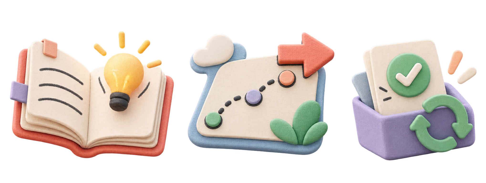
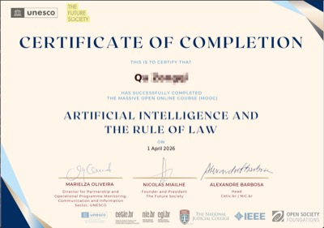
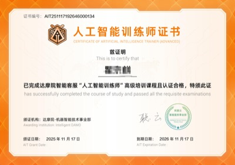
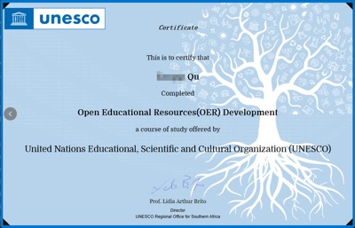
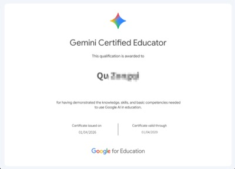

AI 实战共学 · 先做成一件事
让 AI 不止会聊天，
还会替你干活。
不用追完所有工具。带着眼下要处理的工作进来：先说清问题，再选路线，最后带走一份能直接用的成果。
80% 的人不需要学完这门课。我会先告诉你哪些不用学 —— 7 天，先上手做出第一个成果。
飞书知识库 + 社群答疑 · 边学边干，直到形成 SOP 闭环
AI 实战共学 · 先做成一件事
不用追完所有工具。带着眼下要处理的工作进来：先说清问题，再选路线，最后带走一份能直接用的成果。
80% 的人不需要学完这门课。我会先告诉你哪些不用学 —— 7 天，先上手做出第一个成果。
飞书知识库 + 社群答疑 · 边学边干，直到形成 SOP 闭环
一眼看懂 · AI 怎样进入一项工作
你会带走什么
每条路线都从一项具体工作开始，最后落到能交付、能复用的结果。
稿件、方案、表格或小工具，先做成一次能交付的结果。
先完成，再优化根据你的起点进入对应模块，不必从头刷完所有内容。
按问题取用把有效步骤、提示词和检查清单保存下来。
下次不用从零开始从你的起点进入
小白、职场人、创作者和想搭 Agent 的人，都从自己的任务开始。
看清大模型、提示词、Agent 与工具关系。
总结、方案、表格、纪要，更快更稳。
选题 → 素材 → 初稿 → 审校 → 分发。
读文件、用工具、按步骤执行。
课程地图
它是一张地图，不是必须从头刷到尾的目录。先解决眼前的问题，再把能力扩展出去。

DeepSeek 入门、AIGC 通识、提示词工程、AI 绘画与视频科普、私有化部署避坑、从 0 到 1 认识智能体。
先画边界再谈能力 —— 这是后面一切的基础。
工具判断框架、信息源、API 通识、中转 API 辨别、用飞书打造自己的知识库。
学到什么用什么，不追新工具。
Claude Code、Codex、Coze 智能体、OpenClaw & Hermes Agent、OpenCLI 与实战案例。
把 AI 装进你的桌面工作流，一人顶一个团队。
初级 → 中级 → 高级 + 智能体案例汇总。想做智能体应用的人按需进入。
AI 写作、漫剧从 0 到 1、AI 绘图、爆款视频保姆级教程。做内容、做 IP 的人按项目取用。
新人从哪开始：先看“先导课：清晰的学习地图”，每个 Part 都有先导课告诉你“要不要学、怎么学”。
带着材料进来，先找到卡点。
进入路线，边学边完成成果。
写回模板、知识库或 Agent。
课程练习样例：把一堆会议记录整理成行动清单和跟进模板。示例用于解释方法，不代表学员案例或结果承诺。
AI 现场 / 每周实验 本周 3 条 · W38
每周三条，有原文、有摘要，也有一个今天就能试的小动作。
信息源OpenAI NewsGoogle AIGoogle ResearchAnthropicGitHub Releases

OpenAI 发布面向法律工作的专用 AI 基础，把模型、专业检索、工作流工具与隐私治理放到同一套配置里。
试一件看你的工作里，哪些任务需要专用资料、工具连接和审核规则，而不是一个通用聊天框。
阅读原文Google Research 展示带学习设计护栏的生成式 UI，让教师生成可互动、可引导的练习，并公开教师审核样例。
试一件把一个课程知识点改成“先操作、再解释”的小练习。
阅读原文Anthropic 分享三类观察指标：AI 参与 AI 研发的程度、Agent 监督情况、计算资源如何分配。
试一件给一次 AI 实验记下提出、验证、复用三个时间点，观察流程速度。
阅读原文公开材料与证书
证书和公开材料放在首页，方便你先判断这套共学由谁在做。




先做筛选
如果你的目标不是“系统用上 AI”，这里可以先帮你节省一次报名。
编程本身这门课不教，先跟我把 AI 这部分搞懂，再去学编程。
那是给技术团队准备的，跟 99% 的普通人没关系。
我的课是“用会”导向，边学边干。
如果你只是想系统用上 AI、把重复工作交给 AI，这门课就是为你写的。
开始报名
报名不是买一堆视频，而是拿到一套能持续使用的 AI 工作方法。
能。路线 A 就是为小白设计的，先导课先讲“AI 能干啥、不能干啥”。
纯看 30–45 分钟，跟着实操 1–2 小时。
讲的是底层逻辑不变的部分，工具层内容随更新动态跟进。
不用学完。80% 的人只需要前两个模块 + Coze 初级，按路线取用即可。
不要求先留手机号，也不制造“名额紧张”。先判断入口是否适合你。
STEP 2

备注：AI共学

大象AI共学
可留言 · 回复时间以实际沟通为准